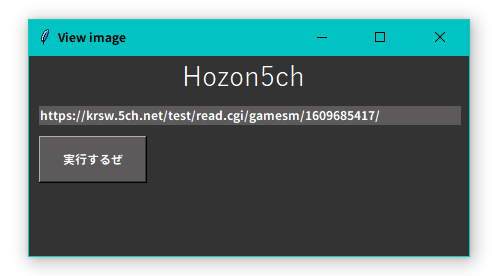
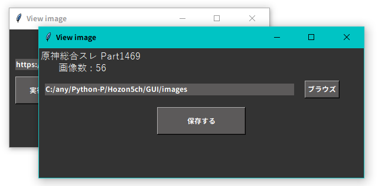
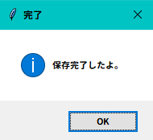
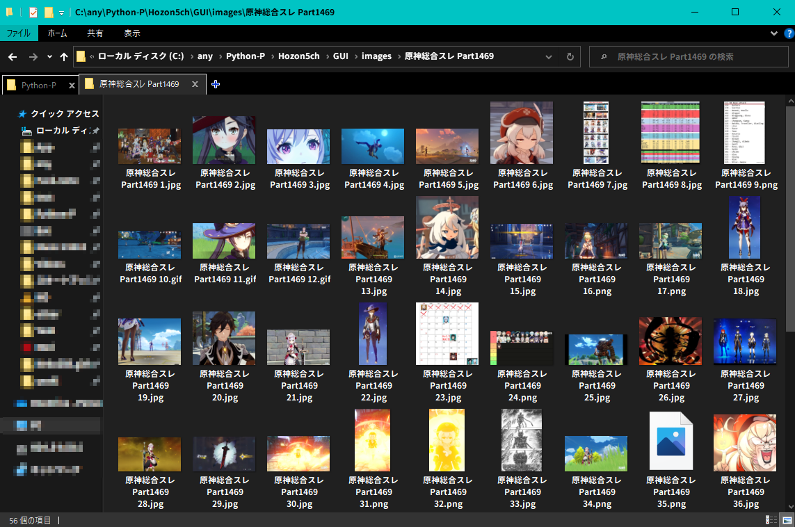

5ch画像一括DL
2021.11.08
5ch画像保存をダウンロードこれは何？
5ch(匿名掲示板)のスレにある画像をすべて保存します。
プログラムの画面
プログラムを開くと、この画面が開きます。
ここでURLをペーストして
ここで保存したいフォルダを指定して
保存するをクリックすれば、指定したURL(5ch)の画像をすべて保存します。
少し待つと
このポップアップが開きます。ポップアップの文字通り保存が完了しました。
本当に保存されたか確かめてみると
ちゃんと全部保存されてます!!
なんで作ったの？
5chで貼られる画像はimgurという外部の画像共有サービスが使われていることが多いのですが、外部のサービスを使われると、私が以前作ったサイトの画像全部取得するプログラムが使えないので、5ch用を作りました。
仕組み
サイトのimgurのリンクをすべて取得して、そのimgurのリンクにある画像を保存します。
ちなみに、imgurというのは画像を共有するサービスです。イメージとしては画像版youtube
5chには画像を上げる機能がないので、みんなimgurを使って画像を上げます。
詳細
言語 : Python3(3.9.6)
使用ライブラリ : requests, os, BeautifulSoup(bs4), Tkinter
Source Code
# coding: UTF-8
import requests,os
from tkinter import ttk
from bs4 import BeautifulSoup
import tkinter as tk,requests,os
from tkinter import font
from bs4 import BeautifulSoup
from tkinter import filedialog
win = tk.Tk()
win.geometry("440x200")
win.title("View image")
win.configure(bg="#333333")
label_welcom = tk.Label(
win,
font = ("游ゴシック", 20),
text = 'Hozon5ch',
fg = "white",
bg='#333333')
label_welcom.place(x = 150, y=0,)
def get_folder():
global path
path = filedialog.askdirectory(initialdir ='C:')
entry_path.delete(0,tk.END)
entry_path.insert(tk.END,path)
def new_win():
get_image()
global entry_path
global hozon_win
hozon_win = tk.Toplevel()
hozon_win.geometry("550x220")
hozon_win.configure(bg='#333333')
hozon_title = tk.Label(
hozon_win,
font = ("游ゴシック", 12),
text = title,
fg = "white",
bg='#333333')
hozon_title.place(x = 0, y=0,)
gazo_num = tk.Label(
hozon_win,
font = ("游ゴシック", 12),
text = '画像数 : '+ str(gazo_link_num),
fg = "white",
bg='#333333')
gazo_num.place(x = 30, y=20,)
#koko
entry_path = tk.Entry(hozon_win,width=60,bg="#5c5a5a",fg="white",bd=0,)
entry_path.insert(tk.END,"C:/")
entry_path.place(x = 10, y =60,height=20,)
button_hozon_win = tk.Button(hozon_win, text='ブラウズ', width=7, fg="white",
bg='#5c5a5a',
command=lambda:get_folder(),)
button_hozon_win.place(x = 450, y = 55)
button_hozon = tk.Button(hozon_win, text='保存する',width=20,height=2, fg="white",
bg='#5c5a5a',
command=lambda:get_image_2(),)
button_hozon.place(x = 200, y = 100)
button_hozon_win.mainloop()
entry_URL = tk.Entry(width=60,bg="#5c5a5a",fg="white",bd=0,)
entry_URL.insert(tk.END,"https://5ch.net/url")
entry_URL.place(x = 10, y =50,)
button_hozon_win = tk.Button(win, text='実行するぜ', width=14, height=2, fg="white",
bg='#5c5a5a',
command=lambda:new_win(),)
button_hozon_win.place(x = 10, y = 80)
def get_image():
global title
global gazo_link_num
global get_image_2
res = requests.get(entry_URL.get())
soup = BeautifulSoup(res.content, "lxml")
title = soup.find('title').text
title = title.replace('\n', '')
img_link = []
print('保存しているサイト : '+title)
for link in soup.find_all('a', class_='image'):#画像のリンクを取得
link = link.get('href').replace('http://jump.5ch.net/?','')
img_link.append(link)
gazo_link_num= len(img_link)
def get_image_2():
try:
path
except NameError:
path = entry_path.get()
save_path = (path+'/'+title+'/')
if os.path.exists(save_path):
mouaru = tk.messagebox.askyesno(title="もう保存したっぽいよ", message="もうこのサイトは保存してるようです。上書きしますか？")
if mouaru==False:return
else:os.makedirs(save_path)
for link in img_link:#画像のリンクを取得
image_name = []
if link.endswith('.jpg'):
image_name
elif link.endswith('.png'):
image_name
elif link.endswith('.jpeg'):
image_name
#この段階ではまだ画像本体ではなく、画像リンク
print('Start saving')
for i, image in enumerate(img_link):
re = requests.get(image)
#画像はre.contentで取得可。
#ここで画像を取得。この下で名付け＆保存
i += 1
with open(save_path + title + str(i) +'.'+ image.split('.')[-1], 'wb') as im:
im.write(re.content)
print("Saved : " + title + " | " +str(i) + " / " +str(len(img_link)))
tk.messagebox.showinfo(title="完了", message="保存完了したよ。")
print('--END--')
win.mainloop()